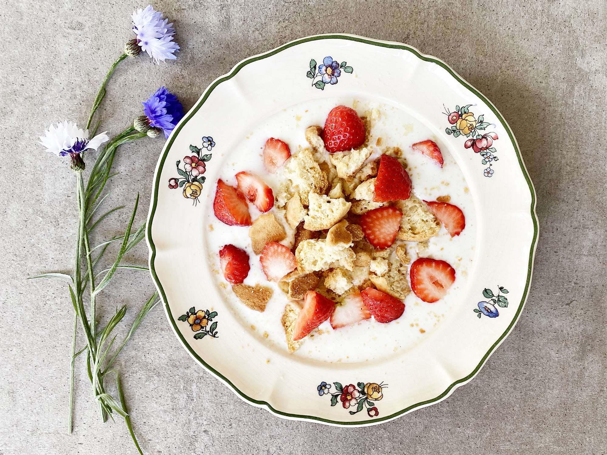

Cold soup

This is traditional cold soup from Denmark. Normally, it's prepared using buttermilk, but our version is vegan and does not contain animal products.
- Almond milk
- Soy yogurt
- Chia seeds
- Strawberries
- Biscuits
How to make the soup
- Take all ingredients from the fridge
- Wash and cut berries
- Mix milk, yogurt, and seeds
- Add strawberries
- Add biscuits